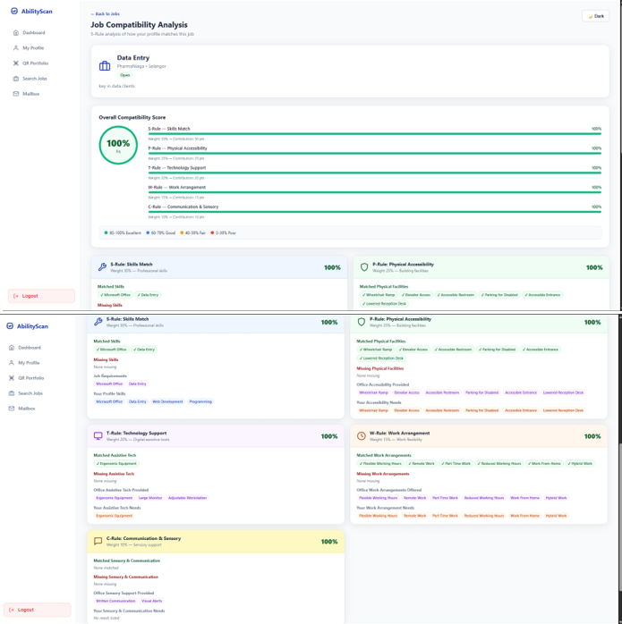
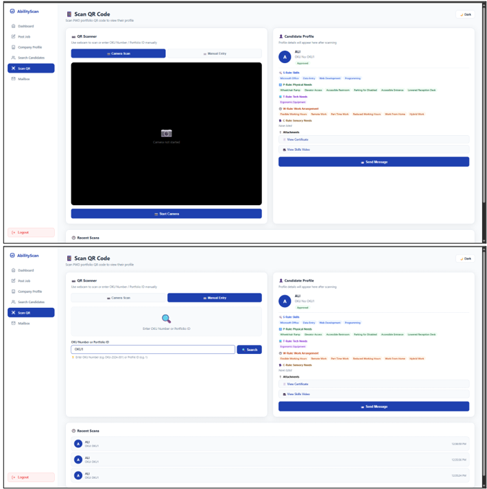
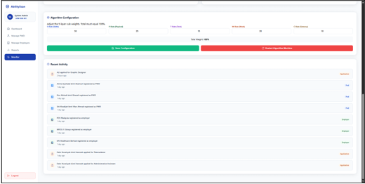

PWD
Employer
AdminFinal Year Project · 2026
An inclusive recruitment platform for persons with disabilities
AbilityScan is a web-based recruitment platform designed to connect persons with disabilities with suitable job opportunities through a transparent matching process.
The platform uses a five-layer rule-based matching engine covering skills, physical, technology, work and sensory requirements.
AbilityScan also provides QR digital portfolios and explanations to help users understand their job-matching results.
My Contribution
- Designed the system requirements and user interface.
- Developed role-based features for persons with disabilities, employers and administrators.
- Implemented the rule-based job-matching process.
- Integrated QR code digital portfolios.
- Deployed the application on an Ubuntu cloud server.
Laravel 11
Vue.js
MySQL
Nginx
Ubuntu
DigitalOcean